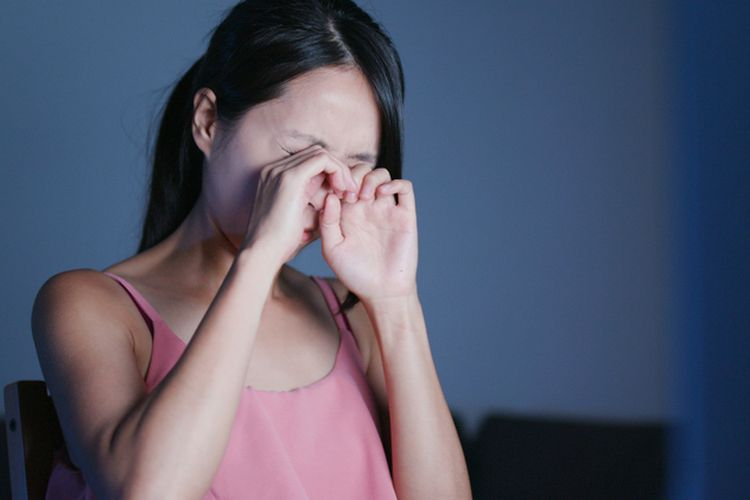
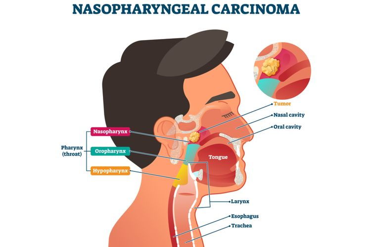
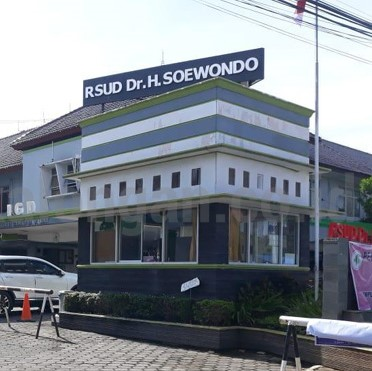
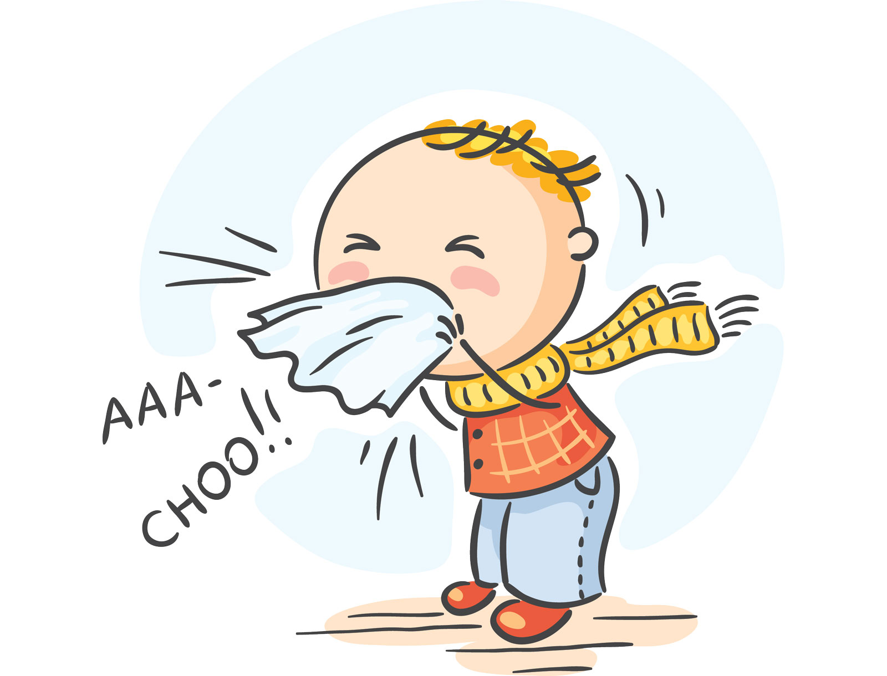

"Herniasi Otak"
terjadi ketika jaringan otak, darah, dan cairan serebrospinal bergeser dari posisi normalnya di dalam tengkorak. Kondisi ini biasanya disebabkan oleh pembengkakan akibat cedera kepala, stroke, pendarahan, atau tumor otak. Kondisi ini merupakan keadaan darurat yang membutuhkan perhatian medis segera karena dapat berakibat fatal jika tidak segera diobati.
Detail Produk
"Sindrom Sjogren"
gangguan pada sistem kekebalan yang diidentifikasi oleh dua gejala paling umum, yakni mata kering dan mulut kering. Kondisi ini sering menyertai gangguan sistem kekebalan tubuh lainnya, seperti rheumatoid arthritis dan lupus.
Detail Produk

"Karsinoma Nasofaring"
kanker yang terjadi di nasofaring, organ yang terletak di belakang hidung dan di atas bagian belakang tenggorokan. Karsinoma nasofaring sulit dideteksi secara dini. Hal tersebut dikarenakan nasofaring tidak mudah diperiksa dan gejala karsinoma nasofaring mirip dengan kondisi lain yang lebih umum.
Detail Produk

"Layanan RAPID ANTIGEN SWAB
di RSUD Dr H Soewondo Kendal"
jumlah pasien per hari 10 orang
Pendaftaran HANYA melalui WA dengan Nomor 085 86800 2000(pada hari H pemeriksaan sebelum jam 11.00 WIB)tersedia 2 paket:
Paket Rp 200.000 = Pendaftaran Pemeriksaan Rapid Antigen Swab Hasil Laboratorium
Paket Rp 240.000 = Pendaftaran Pemeriksaan Rapid Antigen Swab Hasil Laboratorium Surat Keterangan Dokter
Detail informasi

"Influenza"
Influenza atau yang lebih umum dikenal dengan flu adalah penyakit menular yang paling umum diderita oleh orang-orang. Influenza ini disebabkan oleh virus. Virus influenza adalah virus yang setiap waktunya bermutasi, sehingga sistem imunitas tubuh sulit mendeteksi virus yang satu ini. Karena sulitnya sistem imun tubuh mendeteksi virus influenza ini, maka tubuh cenderung lebih mudah terkena flu. Bahkan tubuh dapat beberapa kali terkena flu dalam waktu yang berdekatan.
Media Penularan :
Flu dapat ditularkan melalui sistem pernapasan juga melalui air ludah. Maka jika kita berdekatan dengan orang yang sedang flu, kemungkinan kita tertular flu sangatlah besar. Perantara udara adalah media penularan flu yang paling cepat.
Cara Pencegahan :
Menjaga daya tahan tubuh agar tidak mudah terserang virus. Misalnya dengan makan teratur, istirahat yang cukup, minum air putih sesuai kebutuhan, berolah raga, dan memiliki gaya hidup yang sehat.Selain itu, menjaga daya tahan tubuh juga dapat juga didukung dengan asupan vitamin terutama Vitamin C yang bisa didapatkan di buah-buahan maupun vitamin yang dijual di toko-toko.
Pencegahan lainnya adalah dengan menggunakan masker ditempat umum, terutama bagi yang menderita influenza.
